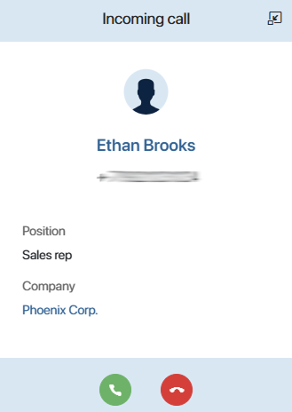
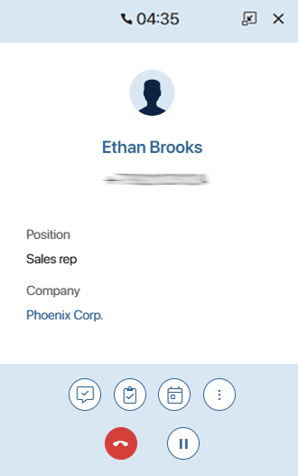
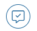
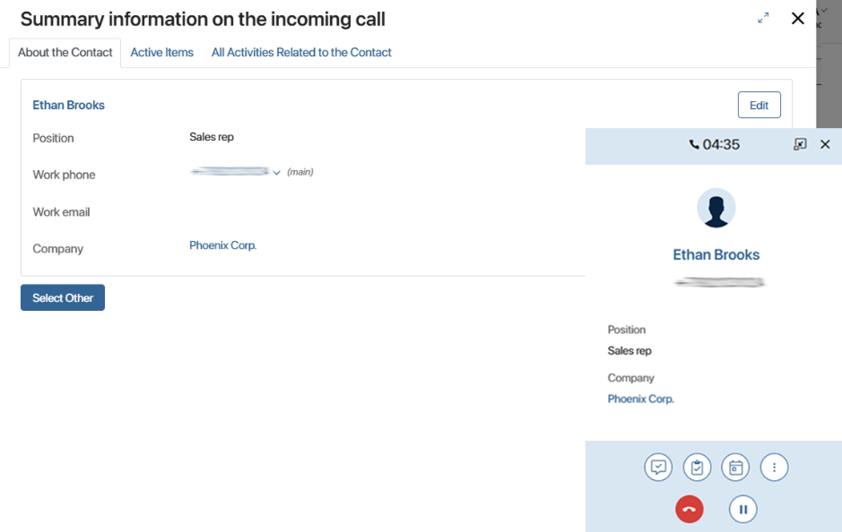
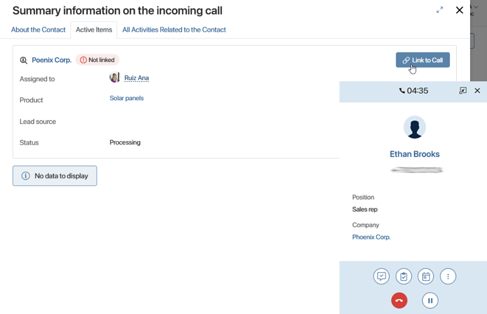
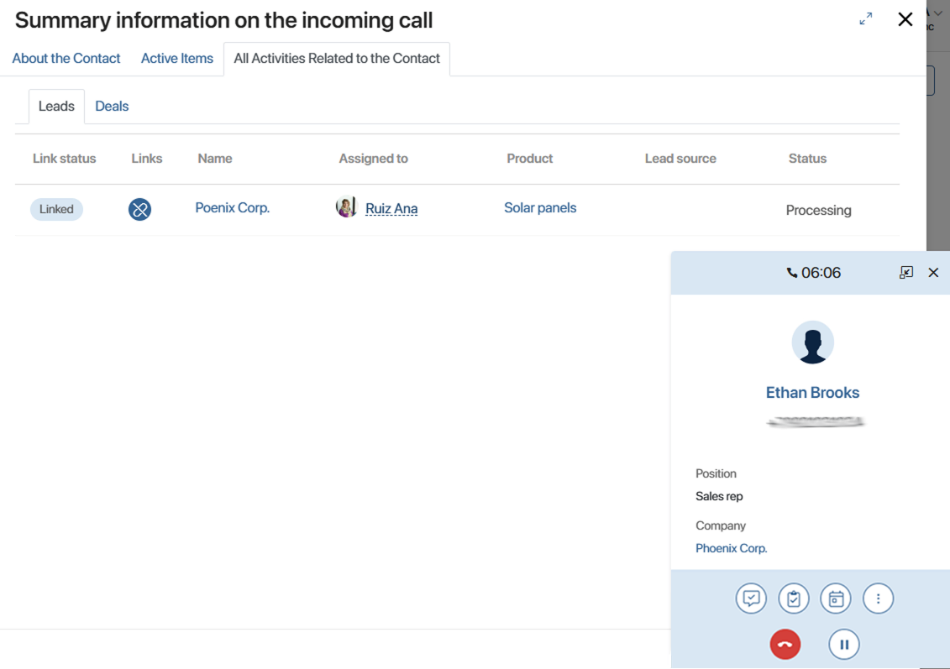
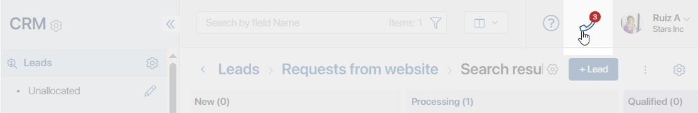

Once the system administrator has configured the integration with the telephony provider and the call page, the sales rep can:
- Answer incoming calls.
- Process calls:
- On the call page, perform various actions with the call: leave notes, create CRM tasks, start a business process, etc.
- On the summary page, view data about the client, as well as about related leads and deals.
- Receive missed call notifications and call back clients.
- View call data and listen to call recordings in the Calls app or call log. Read more about it in the Telephony workspace article.
Working with calls is available if you activate one of the paid CRM solutions, which includes BRIX Communication Management solution.
Answer a call
When the sales department receives a call from a client, the sales rep sees a notification in the BRIX interface.

The call page displays the name and phone number, as well as additional information about the contact, such as the client’s position and company.
To answer a call, click on the page. To finish it, click .
If you get a call from a number that has not yet been entered into the system and you answer the call, a new item is automatically created in the Contacts app. You can enter client’s details when editing a contact page.
Process a call
To get information for further work with the client, you can perform the following actions on the client’s page during and after the call:

- — start a business process.
- — leave a note. It can be a comment with the result of the conversation or a reminder for the call. The text will be displayed on the item page in the Calls app.
- — create a CRM task, such as a meeting, webinar, or next call. Please note, tasks are only available if you activate a paid CRM solution that includes working with CRM tasks.
- — schedule an event in the calendar.
- — put a call on hold, for example, to find additional information about a client.
- — reassign the call to another employee. Click the button and select an employee from the list, the specified sales rep will receive a call notification and your call will end.
View summary information on the call
From the page of incoming and outgoing calls, you can go to the summary page. It shows all the data about the client that you need during the call on different tabs:
- About Contact. Contact page identified by number. You can link it to the call to access the client’s leads and deals, or select another contact if an incorrect record is identified.
- Active Items. Recently created leads and deals with a contact. If a client calls for a specific sale, link the corresponding item to the call, such as a deal. You can view the details of the deal, and the call details are automatically saved on its page.
- All Activities Related to Contact. Used if no suitable record is displayed on the Active Items tab. Here you can view all leads and deals with this contact. Link a call to one of the items, and the data about the call will appear on its page.
By linking a call to a contact, lead or deal, you can save the history of communication with the client on the item page. The data will be recorded in the Call Log widget. The administrator should place it on the app forms.
To view the call summary information:
- Click the icon in the notification. The summary page opens.
- On the About Contact tab, verify the client’s data. If an incorrect contact item is identified by the phone number, click Select Other and specify the correct item.
To access the client’s leads and deals, click Link to Call.

You can also add additional client's data by clicking the Edit button. On the opened contact page, make and save the changes.
- The Active Items tab displays recently created leads and deals on which you are working with the client. To save the call data on the page, for example, for a lead, click the Link to Call button next to its name.
 - If the Active Items tab does not contain the required record, for example, the client called about an earlier deal, go to the All Activities Related to Contact tab. Here, separate tabs show lists of all leads and deals with the contact. Link the desired item to the call by clicking the icon. The information about the call will be saved on the item page.

Process a missed call
If an incoming call was not answered, you will receive a notification about it. A counter at the top of the page shows the number of missed calls. This will help to keep every potential client and improve the quality of service in the company.

Click the handset icon to view caller information. The window that opens shows the contact's name, phone number, and date for each missed call. A client who is not yet in the database will have their number displayed in the Name field.
You can:
- Call back the client without going to their page. To do this, click on the phone number and select the provider. An outgoing call page will appear on the screen, where you can process the call.
- Perform an action with the call: create a note, CRM task, calendar event or start a business process. To do this, click the three dots and select the desired option.
- Delete the call record by clicking the trash icon.
- Delete all missed call notifications by using the Clear List button.

Found a typo? Select it and press Ctrl+Enter to send us feedback